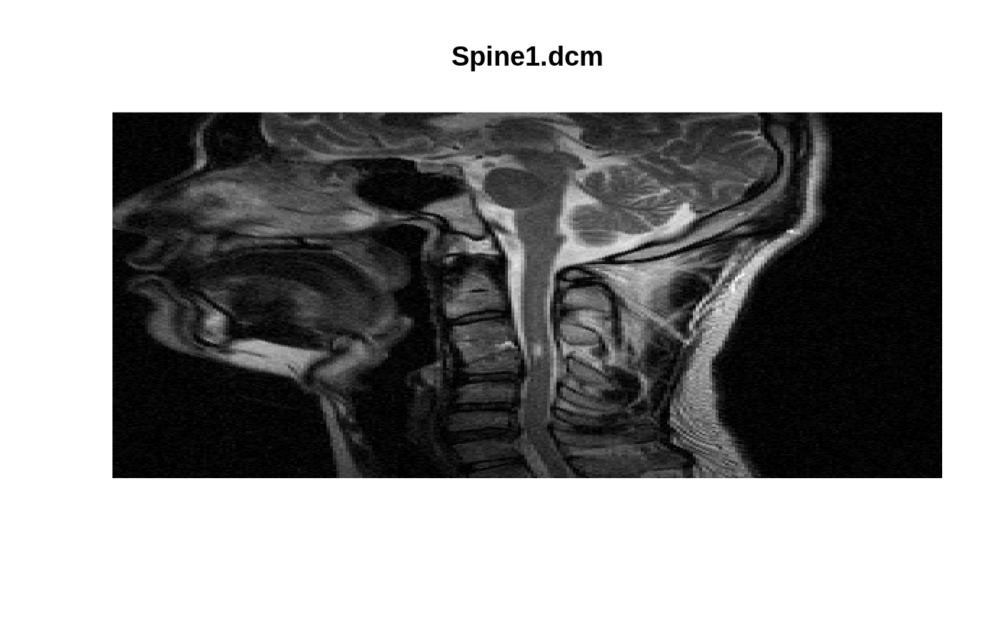

Read Single DICOM File
readDICOMFile.RdAll information, both header and image, is read into a list structure from a DICOM file.
readDICOMFile(fname, boffset = NULL, endian = "little", flipud = TRUE, skipSequence = FALSE, pixelData = TRUE, warn = -1, debug = FALSE) parseDICOMHeader(rawString, sq.txt = "", endian = "little", verbose = FALSE)
Arguments
| fname | is the file name of the DICOM image (with suffix). |
|---|---|
| boffset | is the number of bytes to skip at the beginning of the DICOM
file (default = |
| endian | is the endian-ness of the file (default is |
| flipud | is a logical variable for vertical flipping of the image
(default is |
| skipSequence | is a logical variable to skip all content contained in
SequenceItem tags (default = |
| pixelData | is a logical variable (default = |
| warn | is a number to regulate the display of warnings (default = -1).
See |
| debug | is a logical variable (default = |
| rawString | is a vector of |
| sq.txt | is an character string (default = “”) that indicates if the DICOM header field is embedded within a sequence. |
| verbose | is a logical variable (default = |
Value
A list containing two elements:
- hdr
all DICOM header fields (with or without “sequence” information).
- img
the ‘image’ information.
Details
A while loop is used to traverse the unknown number of DICOM header
fields contained in a single file. Information contained in
“sequences” may be included/excluded according to the logical
variable skipSequence (default = TRUE).
A resursive implementation of the code breaks the DICOM file into segments and calls itself to parse each segment.
Strict adherence to the DICOM standard is not required. Specifically, content is allowed to start at the first byte and the four characters ‘DICM’ are not required at bytes 129-132.
References
Whitcher, B., V. J. Schmid and A. Thornton (2011). Working with the DICOM and NIfTI Data Standards in R, Journal of Statistical Software, 44 (6), 1--28. http://www.jstatsoft.org/v44/i06
Digital Imaging and Communications in Medicine (DICOM)
http://medical.nema.org
http://en.wikipedia.org/wiki/Digital_Imaging_and_Communications_in_Medicine
See also
readDICOM
Examples
x <- readDICOMFile(system.file("dcm/Abdo.dcm", package="oro.dicom")) graphics::image(t(x$img), col=grey(0:64/64), axes=FALSE, xlab="", ylab="", main="Abdo.dcm")x <- readDICOMFile(system.file("dcm/Spine1.dcm", package="oro.dicom")) graphics::image(t(x$img), col=grey(0:64/64), axes=FALSE, xlab="", ylab="", main="Spine1.dcm")